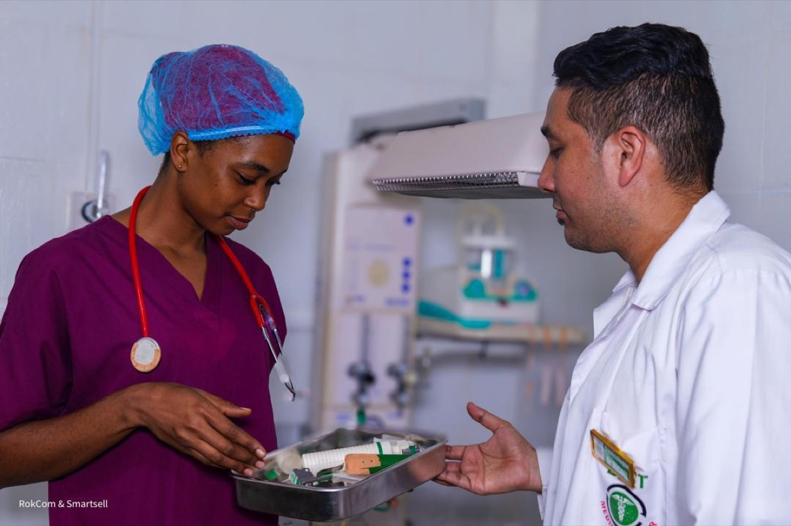

Médecine générale
Consultations, suivi des maladies chroniques, certificats et orientation vers les spécialistes.
- Consultation adulte
- Consultation pédiatrique
- Suivi tension & diabète
De la prévention au suivi, nos équipes partagent l’information utile pour vous éviter les démarches répétitives.

Nos départements
Sélectionnez un service pour simuler une prise de rendez-vous et découvrir son parcours.
Consultations, suivi des maladies chroniques, certificats et orientation vers les spécialistes.
Prévention, suivi gynécologique, accompagnement pré et postnatal.
Évaluation cardiovasculaire, examens de contrôle et suivi personnalisé.
Des soins de proximité, sur prescription ou dans le cadre de votre suivi.
Un parcours guidé depuis la prescription jusqu’à la lecture des résultats.
Un premier échange rapide pour évaluer votre situation et vous orienter.
Votre parcours simplifié
À chaque étape, votre espace patient centralise rendez-vous, documents et messages.
Découvrir l’espace patient →Un motif, un médecin ou le premier créneau disponible.
Mes symptômes et documents avant la consultation.
Au centre ou en vidéo, selon mes besoins.
Résultats, ordonnance et prochain rendez-vous au même endroit.